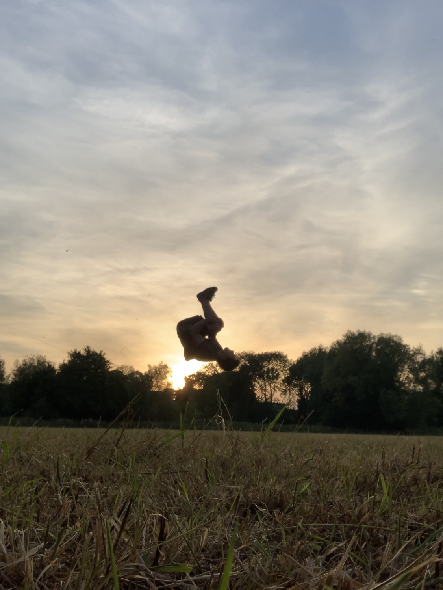
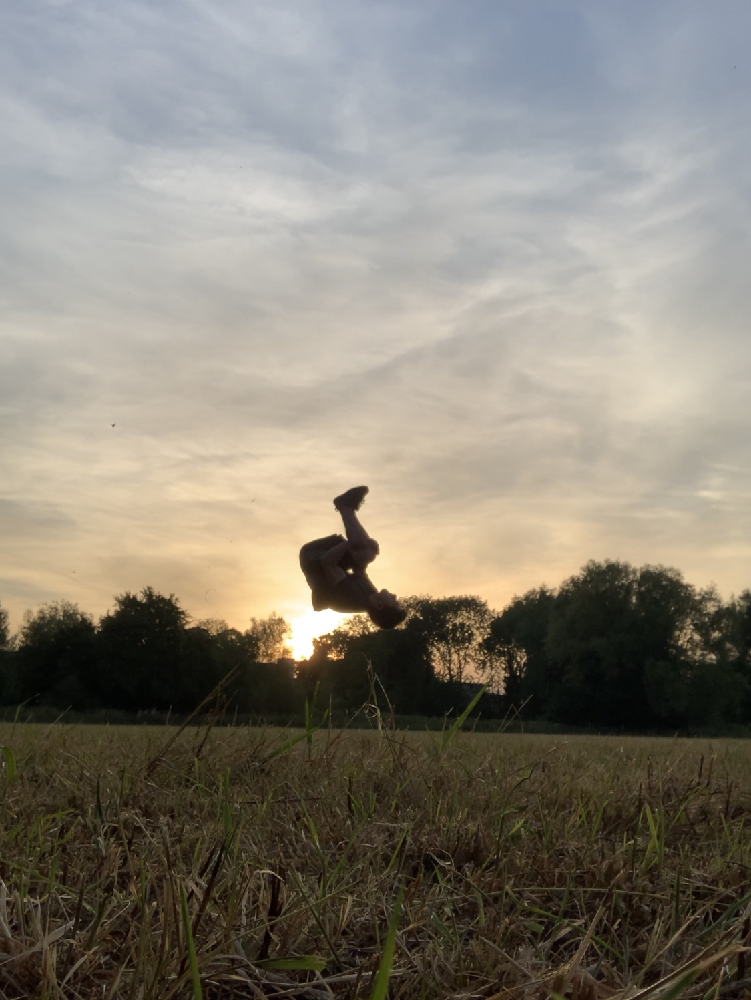

Projects
Interactive Theorem Proving for Graphical Languages
+
I am an active contributor to the Chyp project. Chyp (pronounced "chip") is an interactive theorem prover for symmetric monoidal categories (SMCs).
SMCs, along with string diagrams (their formal graphical syntax), have found exciting applications in areas including Quantum Computing, Machine Learning and Quantum Natural Language Processing.
Quantum Machine Learning with String Diagrams
+
I am developing a formal framework for hybrid quantum-classical machine learning algorithms in the lanugage of string diagrams.

Language Model trained on Alice in Wonderland
+
I built a transformer-based language model in PyTorch, and after preprocessing the text from Lewis Carroll's "Alice's Adventures in Wonderland" and "Through the Looking Glass", trained it as a character-level language model that generated text in the same style as the novels.
The results generated were fantastic, and sounded like they could have come out of a new entry in Carroll's works!
“Begin at the beginning,” the King said gravely, “and go on till you come to the end: then stop.”
“Read them,” said the King.
The White Rabbit put on his spectacles. “Where shall I begin, please your Majesty?” he asked.
Key Roles
Representative of the Quantum Foundations Research Cluster, Wolfson College, Oxford
+
"Are error correcting codes built into the laws of the universe?"
"What is the connection between Quantum Mechanics and Contemporary Music?"
These are some of the questions we ask in the Quantum Foundations Research Cluster at Wolfson College, Oxford, where brilliant minds from a range of academic backgrounds come together to discuss the 'big' questions about the universe in an exciting interdisciplinary atmosphere.
Co-organizer of The ZX Seminar Series
+
The ZX-calculus is a graphical language leading the way for the next generation of quantum software.
I co-organize the weekly ZX seminar, which provides a virtual venue for researchers to share their work related to the ZX calculus.
Hobbies
 



I've loved sport throughout my life, and am a avid skiier, windsurfer, and tennis player, among many others.
From motivating me to look after my health, to stress relief, to allowing me to discover some of the best friends I've ever met, participating in sport has had a profound impact on my life.
One of my core values is to help bring this positive impact to others, no matter how small and in whatever way I can.